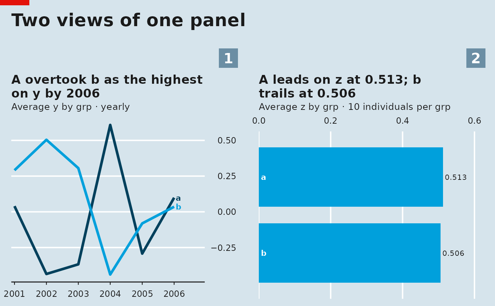

Lays charts out in a grid under one headline, numbers each panel in a square at its top right, and adds a shared source and notes footer, like a page of small multiples in a magazine.
Usage
panel_figure(
plots,
ncol = 2,
title = NULL,
subtitle = NULL,
source = NULL,
notes = NULL,
tags = TRUE,
heights = NULL,
widths = NULL,
style = NULL
)Arguments
- plots
A list of charts from the
panel_*functions.- ncol
Number of columns.
- title, subtitle
Figure headline and optional line under it.
- source
Shared source line for the footer.
- notes
Optional footnotes (character vector, one per line).
Number the panels 1, 2, 3, ... (a chart's own
tagwins).- heights, widths
Relative sizes of rows and columns.
- style
Look for the figure frame; default is the first chart's style.
Value
A panel_figure. Print it, or save it with save_panel().
Examples
# \donttest{
d <- data.frame(who = rep(1:20, each = 6), yr = rep(2001:2006, 20),
grp = rep(c("a", "b"), each = 60), y = rnorm(120), z = runif(120))
p <- as_panel(d, who, yr, source = "simulated")
panel_figure(list(panel_line(p, "y", by = "grp"), panel_bar(p, "z", by = "grp")),
title = "Two views of one panel")

# }